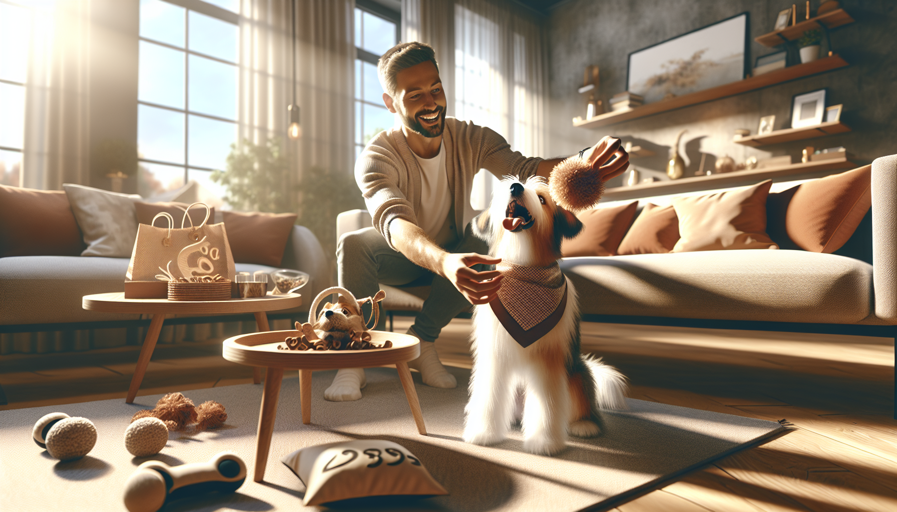

Every dog owner knows the feeling: you look at your pup’s sweet face and instantly want to give them everything. The fluffiest bed, the fanciest treats, the cutest accessories, the best toys in every color. But loving your dog well does not have to mean spending a fortune. In fact, some of the most meaningful ways to spoil your dog are simple, thoughtful, and surprisingly affordable.
If you are a pet parent, dog lover, or gift shopper searching for smart ways to treat a four-legged friend, the good news is this: dogs care far more about attention, comfort, play, and routine than they do about big price tags. A little creativity can go a long way when it comes to making your dog feel adored.
In this guide, we are sharing practical, budget-friendly ideas for how to spoil your dog without breaking the bank. From homemade enrichment to personalized touches, these tips will help you create joyful moments your pup will love while keeping your wallet happy too.
One of the easiest and most affordable ways to spoil your dog is also the one they probably want most: more time with you. Dogs thrive on connection. A few extra minutes of focused attention can mean more to your pup than an expensive new gadget or luxury pet item.
Try building small moments of one-on-one time into your day. That could mean an extra walk around the block, a longer game of fetch in the yard, or simply sitting together for belly rubs after dinner. These moments strengthen your bond and give your dog the emotional connection they crave.
The best part? Quality time is free, and for many dogs, it feels like the ultimate luxury.
You do not need to fill your cart with expensive pet toys to keep your dog entertained. Many budget-friendly enrichment ideas can be made using items you already have at home. Dogs love novelty, texture, and the challenge of solving simple puzzles, so a homemade toy can be just as exciting as a store-bought one.
A braided tug toy made from old T-shirts, a treat puzzle using a muffin tin and tennis balls, or a cardboard box filled with safe paper and hidden treats can provide tons of fun. Rotating toys instead of leaving them all out at once can also make old favorites feel brand new again.
Enrichment is a wonderful way to spoil your dog because it supports their mental health as well as their happiness. A dog who gets to sniff, search, lick, and solve is a dog who feels engaged and fulfilled.
Treats are a classic way to spoil your dog, but they do not have to be expensive to feel special. Instead of splurging on premium packaged snacks every week, look for simple, dog-safe foods that can be used in moderation as affordable rewards.
Many dogs love small bites of carrots, apple slices without seeds, blueberries, green beans, or plain cooked sweet potato. You can also make homemade dog treats in batches using budget-friendly ingredients like oats, pumpkin puree, peanut butter without xylitol, and banana.
Another smart tip is to break larger treats into smaller pieces. Your dog still feels rewarded, but your treat supply lasts much longer. This is especially helpful for training sessions or multiple-dog households.
Spoiling your dog does not mean overfeeding them. A thoughtful treat routine that balances fun and health is one of the best gifts you can give.
Dogs love having a special place to relax, nap, and feel safe. Fortunately, making your home feel extra cozy for your pup does not require a designer dog bed or a luxury makeover. Small comfort upgrades can make a big difference.
Start with what you already have. Add a soft blanket to their bed, place their resting area near natural light, or create a quiet corner away from household noise. If your dog likes to burrow, fold up an old throw for extra softness. If they enjoy looking outside, move their bed near a window where they can watch the world go by.
Even simple additions can feel like a real treat to your dog, especially when they are chosen with your pet’s personality in mind. Comfort is one of the most underrated ways to spoil a dog, and it often costs very little.
When your dog feels safe and comfortable, they are more relaxed, content, and ready to enjoy the little pleasures of daily life.
Spoiling your dog is not just about what you buy. It is also about what you do together. New experiences can be incredibly exciting for dogs, and many of them are completely free or very low cost.
Visit a dog-friendly park, explore a new walking trail, take a car ride with the windows cracked, or stop by a pet-friendly outdoor market. Even a different route through your neighborhood can feel like an adventure when your dog gets to discover new smells and sights.
You can also create special “dog days” at home. Fill a kiddie pool with a little water for splash time, scatter treats in the grass, or host a playdate with a friend’s dog if your pup enjoys socializing.
Experiences create happy memories for both you and your dog. They are often more meaningful than impulse purchases, and they remind us that joy does not have to be expensive.
If you want to spoil your dog in a way that feels unique and heartfelt, personalized pet products are a wonderful option. They can make everyday life feel more special without requiring a huge budget, especially when you choose practical items your dog will actually use.
Think custom bandanas, personalized name tags, pet bowls, treat jars, or keepsake accessories that reflect your dog’s personality. These little details add charm to your pet’s routine and make thoughtful gifts for birthdays, gotcha days, holidays, or new pet parents.
Personalized items also tend to feel more meaningful than generic products because they celebrate the bond you share with your dog. A custom accessory can instantly turn an ordinary moment, like a walk or photo session, into something memorable.
When done right, personalization is a budget-friendly way to make your dog feel truly cherished while also giving pet lovers a gift that feels one of a kind.
One of the best ways to spoil your dog without financial stress is to shop more intentionally. A few smart habits can help you stretch your budget while still treating your pup regularly.
Start by focusing on value instead of impulse buys. Choose durable toys over trendy ones that may not last. Buy treats in larger quantities when they are on sale. Rotate seasonal purchases and keep a small pet budget each month for fun extras. If you are shopping for gifts, prioritize items that are both cute and useful.
It also helps to avoid the common trap of overbuying. Dogs do not need a mountain of stuff to feel loved. A smaller number of well-chosen items, paired with plenty of attention and enrichment, is often the perfect balance.
Budget-conscious pet parenting is not about saying no to your dog. It is about saying yes in smarter, more sustainable ways.
Spoiling your dog is really about making them feel safe, happy, included, and adored. That can come from a homemade toy, a fresh blanket, a longer walk, a healthy treat, or a personalized gift chosen just for them. The truth is, dogs are wonderfully easy to please when the love behind the gesture is real.
So if you have been wondering how to spoil your dog without breaking the bank, start with the simple things. Spend a little extra time together. Get creative with what you have. Choose affordable upgrades that add comfort, fun, and personality to your dog’s everyday life. Those small acts of care are often the ones that matter most.
If you are looking for a thoughtful way to treat your pup or find the perfect gift for a dog lover, shop personalized pet products at SnoutAndAbout on Etsy.